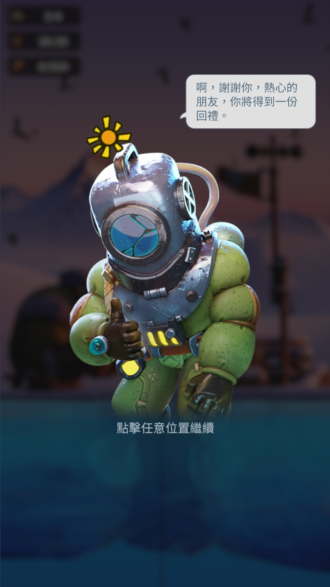
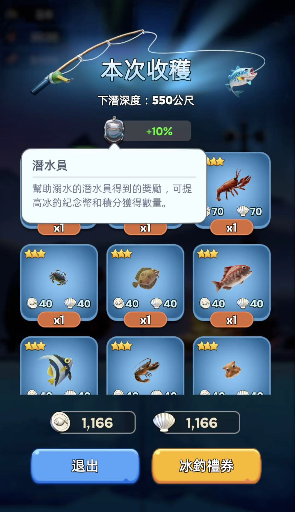
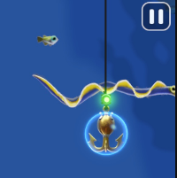
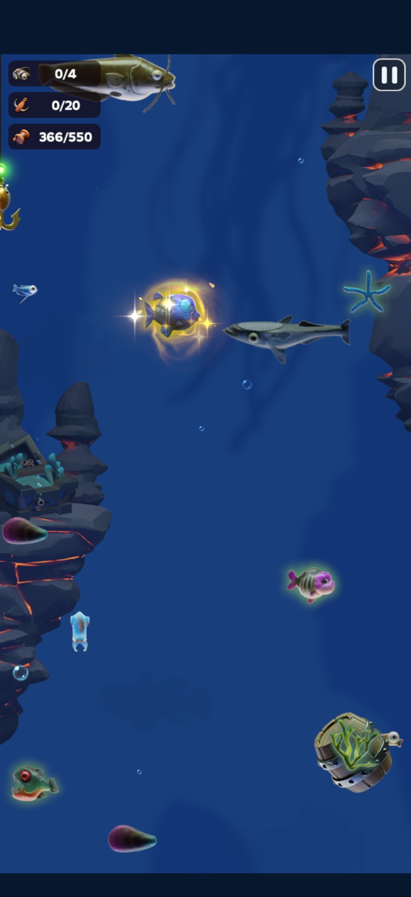
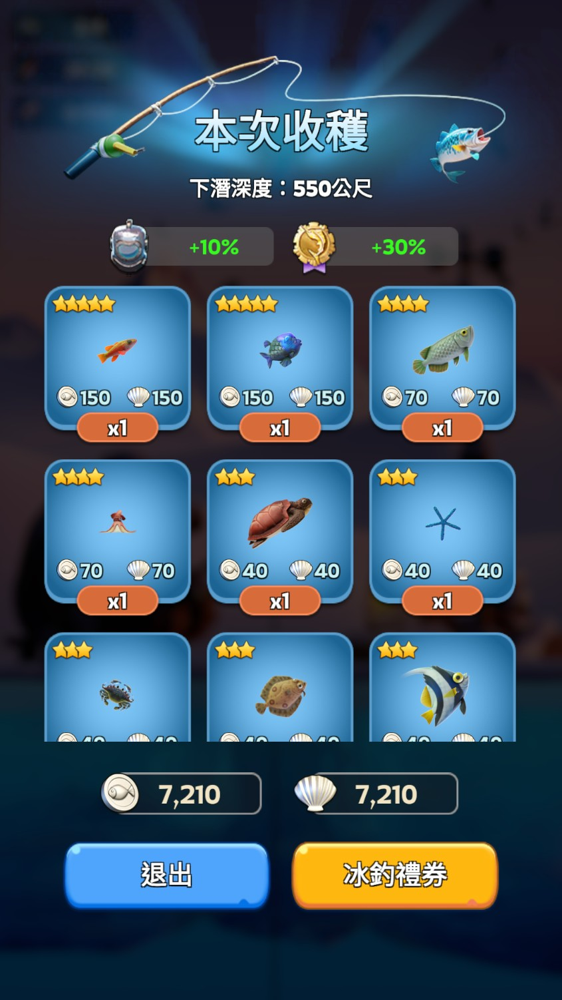
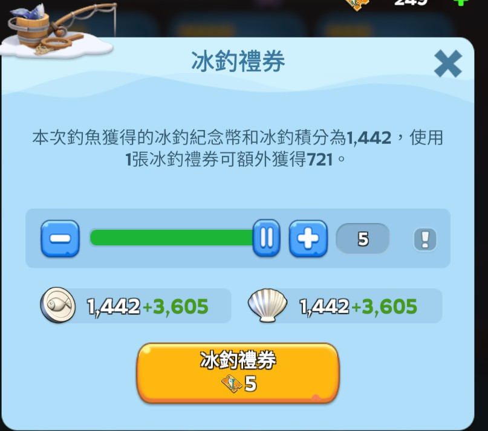
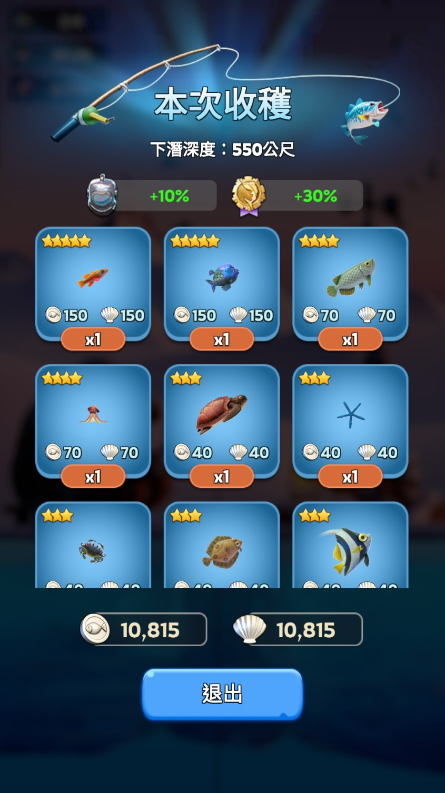

The Fishing Tournament is a recurring monthly event in Whiteout Survival that runs for just three days. The whole event boils down to fishing for points — which can get repetitive — so this guide collects the key tips that help you score faster and higher.
I'll skip the basics and focus on what actually matters.
Pre-Tournament Prep
Pack Selection
Decide which packs you're buying before the tournament starts. They directly affect your scoring rate, and buying them late in the event means less time to benefit.
Fishing Pro Must-buy for high score
This pack comes with a 10% score buff — it's not just "a bundle of small stuff." If you're chasing a high score, this is mandatory.
It also includes some sticker rewards.
Fishing Master Must-buy for high score
This pack comes with a 20% score buff, the strongest score multiplier of the three packs — also mandatory for high scoring.
On top of that, it includes some 20% combat buff potions (separate from the fishing buff) that are very useful for everyday combat — that's the extra reason dolphin and whale players want this pack.
Fishing Pro Set Recommended (has alternatives)
The first two tiers cost about $20 USD. Beyond the Fishing tokens (used to upgrade your fishing gear), the pack includes a set of consumable tools used during fishing: Ocean Scanner, Lantern, Reel Stabilizer, and similar items.
F2P and low-spenders don't have to panic — these consumable tools are also handed out by regular events, and if you've been saving them, your stockpile can carry you through without buying the pack.
Among them, the Lantern is the single most important item for high scores: deep-sea visibility past 300m basically depends on it — without it you literally can't see the fish clearly.
Overall: Fishing Pro + Fishing Master combined give you 30% score buff, which is the core of any high-score push; buy them if you can. Fishing Pro Set mainly helps you max your gear earlier and tops up consumables — F2P/low-spend players can lean on accumulated Ocean Scanners, Lanterns, and Reel Stabilizers instead.
Gear not maxed? Run Frosty Prospector first
If you haven't whaled enough to max out your fishing gear, use a ticket to enter Frosty Prospector (the treasure mode) instead.
Frosty Prospector lets you descend to 550m and catch 20 fish per session regardless of whether your gear is maxed — so it's a much more efficient way to grind upgrade materials.
Operation Tips
Priority targets: glowing fish & the drowning diver
Any glowing fish on screen is a major score source — hook them first:
- Gold-glowing fish = 5-star — highest score, top priority
- Very bright white fish = 4-star — second priority after gold
Beyond high-star fish, there's one more must-catch target: the drowning diver. Rescuing him gives you a +10% score bonus and he'll reward you with items as thanks for saving his life.


Hitboxes are on the head, not the tail
At its core, fishing is a bullet-hell game, so hitboxes matter. Both the hook detection and the shield-break detection are on the fish's head — so brushing past a tail won't drain your protection or trigger a hook. If you're used to bullet-hell games, this should feel familiar.

Use the Horn of Poseidon wisely
The Horn of Poseidon has two uses depending on your goal:
- Filling the Guide: if you haven't completed your fish collection, use it to summon a random fish
- Score push: if you're chasing a top score, use it to increase the spawn rate of 5-star fish
Horn-summoned fish have two distinct traits:
- Regardless of their original depth, they always appear at 300–350m
- They are glowing gold all over — visually impossible to miss

Not happy with your score? Quit and retry
As long as you haven't hooked the final fish, you can press the pause button (top-right) to exit, and the session restarts when you re-enter.
Translation: retry until you're satisfied.
Fish depth is fixed within the same session
Heads up: within the same session (the one consumed by a single fishing ticket), fish always spawn at the same depths — only their left/right positions change.
So on retries, note where the rare fish appeared and prepare in advance. If you can't remember, the Ocean Scanner will alert you when you're getting close.
Score-Push Techniques
Icefisher Voucher (5× mode)
The Icefisher Voucher applies a 5× multiplier to your score for one session — paired with a strong run, breaking 10,000 in a single session isn't a dream.



Use 5× entry on the very last round
If you're chasing a ranking, save your 5× entry for the very last round of the event. The score still gets credited even if the round ends with the tournament — you won't lose your bonus just because you "ran out of time."
Good luck hitting 10K every run!